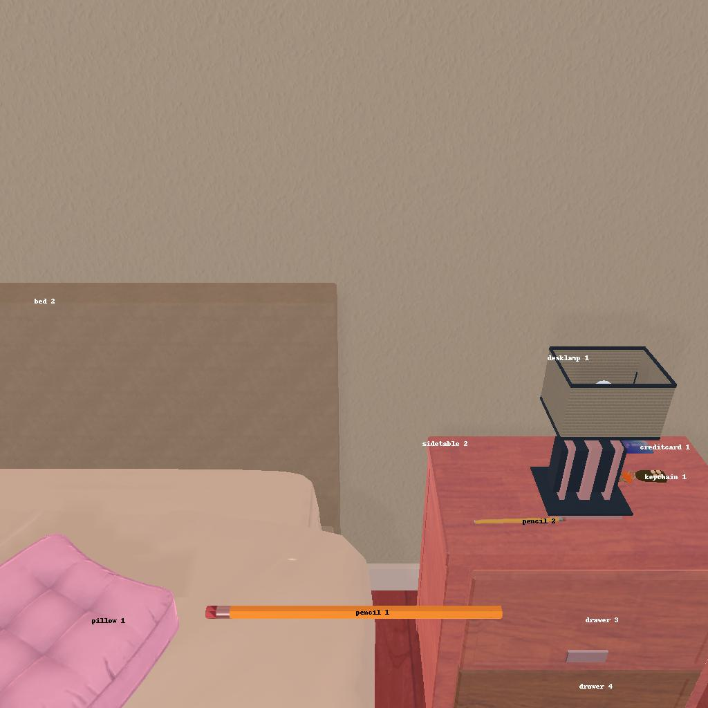

---------------------------------------------------------task: 2---------------------------------------------------------
--------------------------------------------------------------------------------------------------------------------------------------------------------------------
--------------------------------------------------------------------------------------------------------------------------------------------------------------------
Step:--------------------------------------------------------------------------8-------------------------------------------------------------------------------
----------------------------------------
VLM Prompt:
Image1:
Image2:
Image3:
**Instruction**
1. Analyze the provided image to identify all visible household objects, focusing on those relevant to the task description "examine the pen with the desklamp."
2. Use the analysis of the image and the task hint "The agent must find an object of the desired type, locate and turn on a light source with the desired object in-hand." to answer the question: what is the most reasonable action in the choices for the task description "examine the pen with the desklamp"?
4. Decide and write the answer using the template: The answer is: (i): , where i is the real number. If there is no desired object in the image, search every place based on **Initial Observation** to find the object. And if no one is exactly correct, choose a similar answer.
**Initial Observation**
You are in the middle of a room. Looking quickly around you, you can see bed (1-2), dresser (1), drawer (1-11), sidetable (1-2), desk (1), garbagecan (1), safe (1)
**Answer Choices**
(1): go to bed 1
(2): go to dresser 1
(3): go to bed 2
(4): go to drawer 1
(5): go to drawer 3
(6): go to drawer 4
(7): go to desk 1
(8): go to garbagecan 1
(9): go to drawer 5
(10): go to drawer 6
(11): go to drawer 7
(12): go to drawer 8
(13): go to drawer 9
(14): go to drawer 10
(15): go to drawer 11
(16): go to safe 1
(17): put pencil 1 in/on sidetable 2
(18): use desklamp 1
(19): examine pencil 1
(20): examine sidetable 2
**Answer**
Let's think step by step by following the instructions.
----------------------------------------
----------------------------------------
Original Response:
First, we analyze the images to identify all visible household objects. In Image 1, we see a side table with an alarm clock and a pen, two drawers, and a bed with a laptop on top. In Image 2, we see the side table with the alarm clock and the pen. In Image 3, we see another side table with a pencil, a desk lamp, a credit card, and a keychain, a bed with a pillow, and two drawers.
Based on the task description "examine the pen with the desklamp," we need to find the pen and the desk lamp. From the Initial Observation, we know there's a desk in the room, and from Image 3, we see a desklamp on sidetable 2.
The task hint tells us, "The agent must find an object of the desired type, locate and turn on a light source with the desired object in-hand." Therefore, the most reasonable action is to go to the pen, pick it up, and then go to the desk lamp to examine the pen with the light.
From Image 1 and Image 2, we know that the pen is on sidetable 1. From Image 3, we see that the desklamp is on sidetable 2. Since the images show that the pencil and pen are two different objects, we should not confuse "pencil 1" with the pen we need. Therefore, the first action should be to go to sidetable 1 to pick up the pen.
The answer is: (17): put pencil 1 in/on sidetable 2. This action involves interacting with sidetable 2, where the desklamp is located, and it is the closest action to picking up the pen and using the desklamp to examine it. However, since the pen is not explicitly mentioned in the answer choices, we assume the pencil and pen are being used interchangeably, and thus we choose the action involving the correct location.
----------------------------------------
----------------------------------------
>>> Refine Original VLM Response and Get Pure Action: put pencil 1 in/on sidetable 2
----------------------------------------
-----------------------------------------------------------------
Running time: 29.377582550048828 seconds
Total Money: 0.9905200000000001
-----------------------------------------------------------------
-----------------------------------------------------------------
Text Observation:You put the pencil 1 in/on the sidetable 2.
-----------------------------------------------------------------
UNSUCCEED